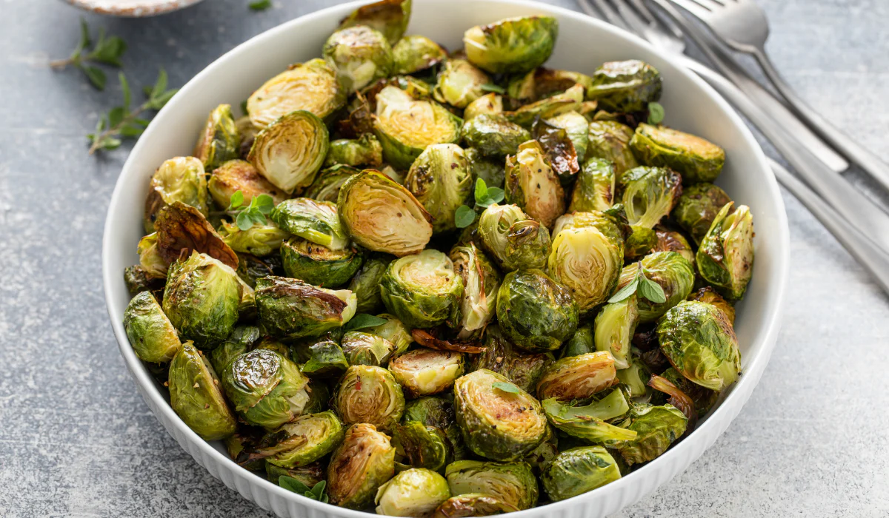

Air Fryer Brussel Sprouts
Home

Description
Follow this quick and easy recipe to create crispy and flavorful brussels sprouts using an air fryer.
Prep Time: 15 mins Cook time: 15 mins
Ingredients
- 1 1/2 pounds Brussels sprouts
- 2 tablespoons olive oil
- 1 teaspoon garlic powder
- 1 teaspoon salt
<1i>1/2 teaspoon ground black pepper
Steps
- Gather Ingredients
- Preheat air fryer to 390 degrees fahrenheit (200 degrees celsius) for 15 minutes.
-
- Meanwhile, trim Brussels sprouts. Add olive oil, garlic powder, salt, and black pepper; toss well.
- Spread sprouts evenly in the air fryer basket.
- Cook in the preheated air fryer for 15 minutes, checking and shaking the basket halfway through the cycle.
- Serve and enjoy!s